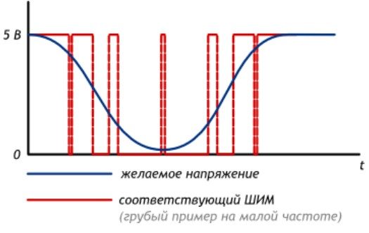
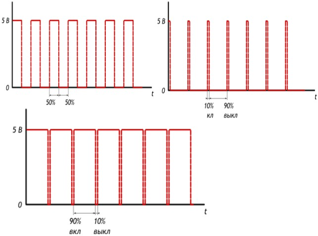
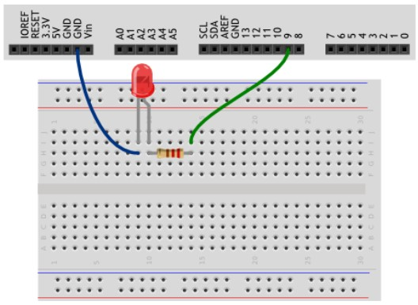
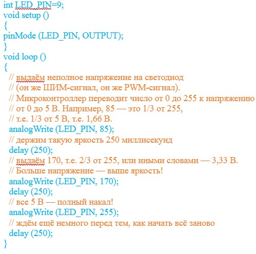
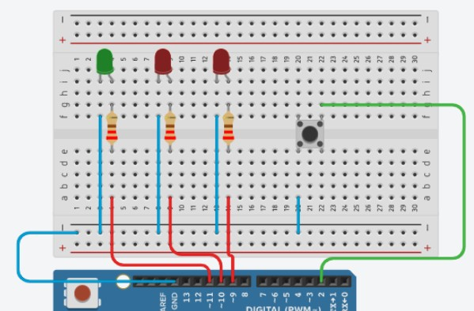
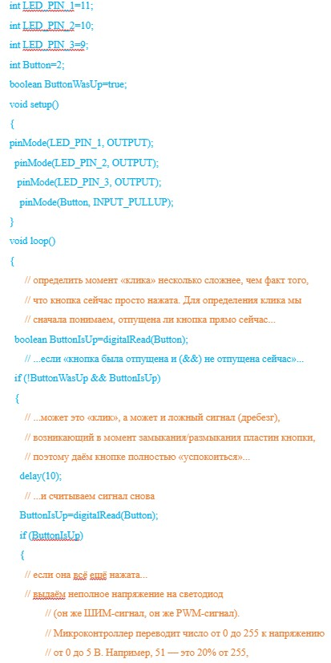
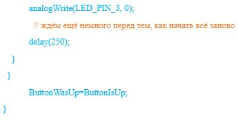
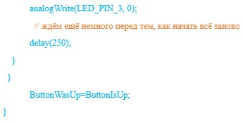

Микроконтроллеры обычно не могут выдавать произвольное напряжение. Они могут выдать либо напряжение питания (например, 5 В), либо землю (т.е. 0 В)
Но уровнем напряжения управляется многое: например, яркость светодиода или скорость вращения мотора. Для симуляции неполного напряжения используется ШИМ (Широтно-Импульсная Модуляция, англ. Pulse Width Modulation или просто PWM).
Отношение полного периода к времени включения называют скважностью (англ. duty cycle). Рассмотрим несколько сценариев при напряжении питания Vcc равным 5 вольтам.
Список деталей для эксперимента:
Схема на макете:
Скетч:
Список деталей для эксперимента:
Схема на макете:
Скетч:
 
